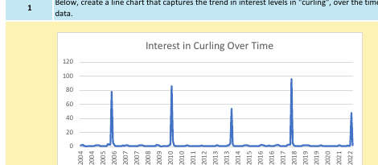
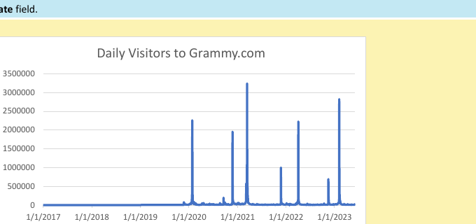

InternshipExcel
Winter Sports Interest Analysis
The Global Career Accelerator · Excel, ChatGPT-assisted analysis
Analyzed 18 years of search-interest data across nine winter sports. Built line and bar charts showing that interest in sports like curling, luge, and bobsleigh spikes sharply every four years — almost entirely during the Winter Olympics — then used ChatGPT to test and refine that hypothesis against the data.
Reflection: This was a good exercise in not trusting my first chart. My initial takeaway was obvious ("Olympics cause spikes"), but narrowing the ChatGPT prompt to specific months and years is what actually produced a sourced, defensible explanation instead of a guess.

InternshipExcel
Analyzing Website Performance for The Grammys
The Global Career Accelerator · Excel, XLOOKUP, business memo
Evaluated whether splitting Grammy.com into two separate sites (Grammys vs. The Recording Academy) in 2022 helped or hurt user engagement. Calculated bounce rate, pages per session, and mobile traffic share before and after the split, found the Grammy Awards show night draws roughly 854,000 more visitors than a typical day, and wrote a business memo recommending the sites stay separate while improving cross-site navigation.
Reflection: The most useful part of this project was catching where ChatGPT's first-draft memo overgeneralized — it stated conclusions more confidently than the underlying numbers actually supported, which pushed me to tie every claim in my final memo back to a specific calculated metric.
InternshipExcel · PivotTables
DoorDash Delivery Analysis
The Global Career Accelerator · Excel PivotTables
Built PivotTables across ~50,000 DoorDash orders spanning five markets to compare delivery time, order volume, and price. Found delivery times average 49.9 minutes (with a 21.6 minute standard deviation), identified American cuisine as the most-ordered category nationally, and delivered three market-specific recommendations for driver incentives and restaurant partnerships.
Reflection: Grouping by market region first, then by cuisine, made regional differences in delivery time and order value much clearer than looking at either factor alone — a reminder that the order you slice data in changes what patterns you actually notice.
InternshipExcel · XLOOKUP
Terracotta Survey Analysis
The Global Career Accelerator · Excel, XLOOKUP, PivotTables
Analyzed customer survey data for a plant retailer to figure out what drives purchase decisions. Used XLOOKUP to join survey responses to a plant-care reference table, then PivotTables to find that low-maintenance plants make up 99.5% of purchases and "care requirements" is the top-cited reason customers buy — insights that shaped a recommendation for how the client should market low-maintenance plants on their homepage.
Reflection: This project made the case for XLOOKUP over VLOOKUP very concrete for me — being able to look left in the data instead of only right saved restructuring three separate reference tables.
InternshipExcel · Statistics
A/B Testing: H&M Email Campaign
The Global Career Accelerator · Sample size calculation, hypothesis testing
Designed and evaluated an A/B test comparing two promotional email subject lines for H&M. Calculated the minimum required sample size, then tested the results: the new subject line lifted open rate from 17.55% to 19.13%, a statistically significant difference (p ≈ 0.047) — enough to recommend adopting it, while flagging the Type I error risk and the need to confirm the lift shows up in downstream clicks and conversions, not just opens.
Reflection: Distinguishing "statistically significant" from "practically significant" was the real lesson here — a p-value under 0.05 tells you the difference probably isn't random, not that it's necessarily large enough to matter for revenue.
InternshipExcel
BART Ridership Analysis
The Global Career Accelerator · Excel feature engineering
Engineered features (day-of-week, transit line classification) from a raw 2021 BART ridership dataset, then calculated key ridership metrics. Found that 83% of the system's ~24.6 million annual riders traveled on weekdays and that the Yellow Line carries the large majority of riders — evidence used to recommend BART shift train frequency toward weekday peak hours.
Reflection: Extracting day-of-week and line classification from messy text fields before I could even start on the "real" analysis was a good reminder of how much of data analysis is cleanup, not math.
InternshipSQL
Analyzing Startup Investments
The Global Career Accelerator · SQL, Crunchbase dataset
Wrote SQL queries against a 27,000+ row Crunchbase dataset to rank startups by total funding and by outcome. Found that Clearwire raised 5.7x more funding than the twelfth-highest funded company, and that cleantech startups — despite showing up disproportionately among the most-funded companies that later closed — actually close at a slightly lower rate (7%) than the dataset average (7.9%).
Reflection: I expected cleantech to be riskier than the data actually showed — a good example of how a vivid pattern ("famous failed cleantech startups") can feel statistically significant when it isn't, and why I always check the base rate before drawing a conclusion.
InternshipSQL + Excel
YouTube Trending Analysis
The Global Career Accelerator · SQL and Excel, same dataset
Analyzed the same dataset of 6,351 US trending YouTube videos (Nov 2017–Jun 2018) two ways. In Excel, explored column types and category-level view averages. In SQL, wrote ranking queries with ORDER BY, LIMIT, and OFFSET to find the most-liked, most-disliked, and most-commented videos, then compared how quickly engagement drops off between the 10th, 100th, and 1000th ranked videos.
Reflection: Doing the same dataset in both tools back-to-back made the trade-off clear: Excel's PivotTables were faster for category-level summaries, but SQL's OFFSET made it much easier to jump to an arbitrary rank in a 6,000-row dataset without scrolling.
InternshipTableau
Forbes Highest-Paid Celebrities
The Global Career Accelerator · Tableau
Dashboard exploring Forbes' highest-paid actors dataset — earnings over time, a breakdown of earnings by gender, and a ranked view of the highest-paid actors year over year.
InternshipTableau
UFO Sightings Dashboard
The Global Career Accelerator · Tableau
Geographic and temporal breakdown of reported UFO sightings — by country and state, by hour of day, by shape reported, and by how encounter length varies across the year.
InternshipTableau
Super Bowl Analysis
The Global Career Accelerator · Tableau
Dashboard comparing Super Bowl ad cost trends over time against TV ratings, and looking at how final score margins relate to viewership.
InternshipTableau
NYC Green Taxi Fares
The Global Career Accelerator · Tableau
Dashboard analyzing 2015 NYC Green Taxi trip data — fare distribution, tip amount, and trip distance, all broken out by rate type.
InternshipTableau
Intel Data Center Location Analysis
The Global Career Accelerator · Tableau
Dashboard evaluating regional power grids as candidate sites for a new data center — comparing energy source mix, renewable energy share, and how supply and demand shift hour-by-hour across a 24-hour period in each region.
Class Project
Python Fundamentals: Functions, Files & Data Processing
Coursework · Python
A series of Python programs covering functions, loops, sentinel-controlled input, dictionaries, and file I/O.
- Corner Store — multi-sale program with product ID lookup, sales tax, and a running cash drawer total. project1.py
- Stadium Ticket Income — calculates total income across three ticket price tiers. stadium.py
- Test Grades — collects grades via a sentinel-controlled loop, then computes the average and sorts high-to-low. grades.py
- Word Histogram — reads a text file and counts word frequency into a dictionary. histogram.py
- Miles to Kilometers — unit conversion using a dedicated worker function. miles.py
- Baseball Players — appends player stats to a file, then reopens and reads them back. players.py
- Hours to Seconds — converts hours and minutes worked into total seconds. seconds.py
Reflection: [Add 2–3 sentences — which program are you proudest of, and what security or data-integrity lesson carried over from it?]
Class Project
Data Visualization: Financial & Web Datasets
Coursework · Tableau, Excel
Created dashboards analyzing financial, social, and web datasets, identifying trends and presenting insights through data visualization.
Reflection: [Add 2–3 sentences — what pattern surprised you in the data, and how did you decide how to visualize it?]
More coming this semester
Future coursework, security labs, and internship deliverables will be added here as I complete them.